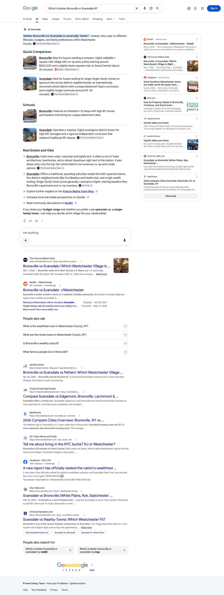
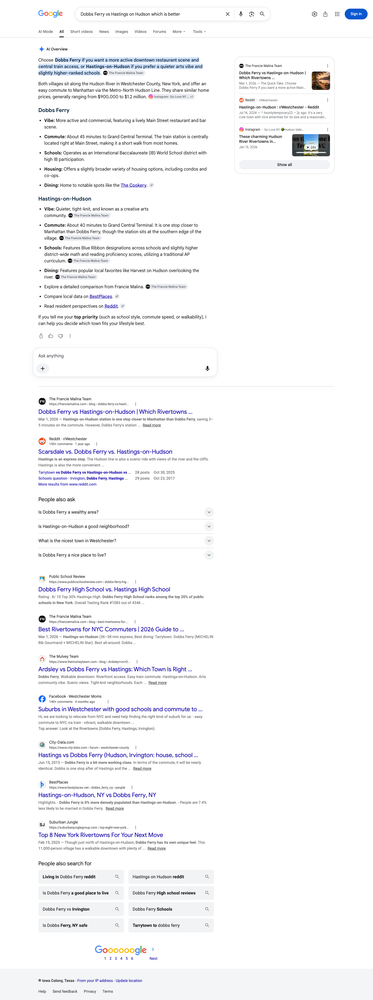
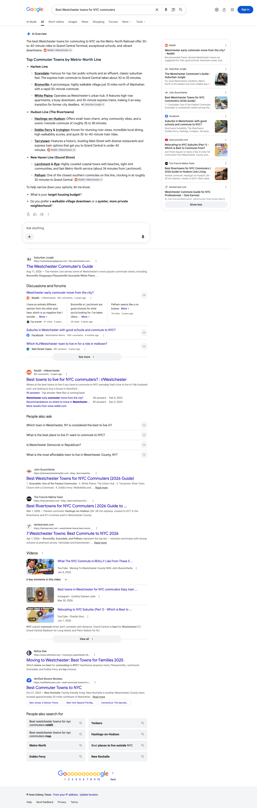

August 2026 | The Francie Malina Team
Executive summary
In August, franciemalina.com was named as a source on twelve of the twelve buyer questions we track. That is the whole set. On every one of them, at least one of Google, Perplexity and ChatGPT carried your site among the sources for its answer, rather than in the blue links beneath it.
Perplexity names you on twelve of the twelve, and Google’s AI Overview on ten, which is ten of the eleven questions where Google actually wrote an AI answer. ChatGPT names you on five, and every one of those five is also named by Google and by Perplexity, so five of the twelve questions carry your site on all three engines at once. Read the three columns as three separate footprints rather than as a ranking of the engines. They are not measured on the same footing.
Ten different pages carried those citations. No single page is holding the result up. The citations are spread across your rivertowns, Chappaqua, Bronxville and Scarsdale material, and the strongest single earner is named on more of the tracked questions than any other page on the site.
The Google Search clicks tile is a whole-site total for the window shown, every query and every page on franciemalina.com, not a count of clicks traced to these citations.
Citation matrix
✓ Cited: your site is among the sources that answer drew on
– Not cited in the reading for that column
◦ Google did not generate an AI Overview for this question, so there was no AI answer to be cited in
| Buyer question | Google AI Overview | Perplexity | ChatGPT | |
|---|---|---|---|---|
| Best Westchester towns for NYC commutersfranciemalina.com | ✓ | ✓ | ✓ | |
| Bronxville vs Scarsdale which Westchester village is betterfranciemalina.com | ✓ | ✓ | ✓ | |
| Which is better Bronxville or Scarsdale NYfranciemalina.com | ✓ | ✓ | ✓ | |
| Dobbs Ferry vs Hastings on Hudson which is betterfranciemalina.com | ✓ | ✓ | ✓ | |
| Is Chappaqua NY a good place to livefranciemalina.com | ✓ | ✓ | ✓ | |
| Best Hudson Line villages for NYC commutersfranciemalina.com | ✓ | ✓ | – | |
| Which Westchester rivertown should I live infranciemalina.com | ✓ | ✓ | – | |
| Is Bronxville NY a good place to livefranciemalina.com | ✓ | ✓ | – | |
| Moving to Chappaqua NY guidefranciemalina.com | ✓ | ✓ | – | |
| Bronxville NY property tax ratefranciemalina.com | – | ✓ | – | |
| Moving to Scarsdale NY guidefranciemalina.com | ✓ | ✓ | – | |
| Moving to Scarsdale NY from Texasfranciemalina.com | ◦ | ✓ | – |
Reading the matrix. Twelve of the twelve questions are cited on at least one engine, so every row below carries your site somewhere. Perplexity accounts for twelve of them on its own, Google’s AI Overview for ten, and ChatGPT for five, which means the three columns overlap heavily rather than stack on top of one another. Google wrote an Overview on eleven of the twelve questions: it named you on ten of those, wrote one without naming you, and on one question built no Overview on the readings taken, which is the circle mark in that column. The one question Google answered without naming you, and the one where it built no Overview on those readings, both already name franciemalina.com on Perplexity, so they read as the nearest open slots in the set rather than as blank space.
The question set. The questions tracked here are the ones a Westchester buyer actually asks, spanning head-to-head village comparisons, rivertown and commuter questions, single-village lifestyle questions and relocation guides. Two things are worth knowing about how to read the columns. Perplexity and ChatGPT were read on multiple days between August 7 and August 25. Google’s AI Overview column is different: it is a single reading of each question taken on August 29, read from the page itself rather than across the month, so treat it as a snapshot. A dash there means your site was not among the sources Google showed on that one reading, which is not the same as being absent for the month. Second, all three engines rebuild their answers on every run and Google localizes its answers by where the search is run from, so a check mark means your site was among the sources on at least one reading in that window, not that it appears on every run. The reverse matters just as much: a question without a mark is one we have not seen you carried on yet, not a settled absence, because a different reading on a different day can return a different set of sources. Source lists were read as first rendered, so any list of sources named here is what the engine showed first, not a complete inventory.
Story one
Perplexity names franciemalina.com as a source on twelve of the twelve questions we track. There is no shape of question in the set it misses. The head-to-head village comparisons, the ranked commuter lists, the single-village lifestyle questions, the property tax question and both Scarsdale relocation questions all carry your site among the sources. The table names the pages of yours that Perplexity carried as sources on each one.
| Buyer question | Status | Your page carried as the source |
|---|---|---|
| Best Westchester towns for NYC commuters | Cited | Rivertowns guide for Hudson Line commuters Westchester walkable communities guide |
| Bronxville vs Scarsdale which Westchester village is better | Cited | Bronxville and Scarsdale comparison |
| Which is better Bronxville or Scarsdale NY | Cited | Bronxville and Scarsdale comparison |
| Dobbs Ferry vs Hastings on Hudson which is better | Cited | Rivertowns guide for Hudson Line commuters Dobbs Ferry and Hastings-on-Hudson comparison |
| Is Chappaqua NY a good place to live | Cited | Chappaqua village guide |
| Best Hudson Line villages for NYC commuters | Cited | Rivertowns guide for Hudson Line commuters |
| Which Westchester rivertown should I live in | Cited | Rivertowns guide for Hudson Line commuters Ardsley village guide |
| Is Bronxville NY a good place to live | Cited | Bronxville village guide |
| Moving to Chappaqua NY guide | Cited | Chappaqua village guide |
| Bronxville NY property tax rate | Cited | Bronxville village guide |
| Moving to Scarsdale NY guide | Cited | Scarsdale relocation guide |
| Moving to Scarsdale NY from Texas | Cited | Your blog index Moving to Scarsdale from Texas guide Scarsdale relocation guide |
Story two
Google built an AI Overview on eleven of the twelve questions in these readings, and named The Francie Malina Team among the sources on ten of them. On the surface a buyer reaches for first, your site sits inside nearly every answer Google wrote. The table names the pages of yours that Google carried as sources on each one.
| Buyer question | Status | Your page carried as the source |
|---|---|---|
| Best Westchester towns for NYC commuters | Cited | Rivertowns commuter guide |
| Bronxville vs Scarsdale which Westchester village is better | Cited | Bronxville vs Scarsdale comparison |
| Which is better Bronxville or Scarsdale NY | Cited | Bronxville vs Scarsdale comparison |
| Dobbs Ferry vs Hastings on Hudson which is better | Cited | Dobbs Ferry vs Hastings comparison |
| Is Chappaqua NY a good place to live | Cited | Chappaqua guide |
| Best Hudson Line villages for NYC commuters | Cited | Rivertowns commuter guide |
| Which Westchester rivertown should I live in | Cited | Rivertowns commuter guide |
| Is Bronxville NY a good place to live | Cited | Bronxville village guide |
| Moving to Chappaqua NY guide | Cited | Chappaqua guide |
| Moving to Scarsdale NY guide | Cited | Scarsdale relocation guide the page on your site that answers it |



Story three
ChatGPT names franciemalina.com on five of the twelve questions, and it reads strongest exactly where you would want it to. Every head-to-head village comparison in the tracked set is one of them. The commuter list and the Chappaqua lifestyle question round the group out.
| Buyer question | Status | Your page carried as the source |
|---|---|---|
| Best Westchester towns for NYC commuters | Cited | franciemalina.com |
| Bronxville vs Scarsdale which Westchester village is better | Cited | franciemalina.com |
| Which is better Bronxville or Scarsdale NY | Cited | Bronxville and Scarsdale comparison Bronxville village guide |
| Dobbs Ferry vs Hastings on Hudson which is better | Cited | Dobbs Ferry and Hastings-on-Hudson comparison |
| Is Chappaqua NY a good place to live | Cited | franciemalina.com |
Pages earning citations
These are the pages on franciemalina.com that an AI answer carried as a source this month, ten of them in total. Each row is an address on your site that an answer named as a source, the number of tracked questions it was named on, and the questions themselves. One row is your blog index rather than a single article, because that is the address the answer named. The rivertowns guide leads the list, with the Bronxville and Chappaqua guides behind it, so the result rests on a spread of pages rather than on any one of them.
| Your page | Questions cited on | Questions it answered |
|---|---|---|
| Rivertowns guide for Hudson Line commuters | 4 | Best Westchester towns for NYC commuters; Dobbs Ferry vs Hastings on Hudson which is better; Best Hudson Line villages for NYC commuters and 1 more |
| Bronxville village guide | 3 | Which is better Bronxville or Scarsdale NY; Is Bronxville NY a good place to live; Bronxville NY property tax rate |
| Bronxville and Scarsdale comparison | 2 | Bronxville vs Scarsdale which Westchester village is better; Which is better Bronxville or Scarsdale NY |
| Chappaqua village guide | 2 | Is Chappaqua NY a good place to live; Moving to Chappaqua NY guide |
| Scarsdale relocation guide | 2 | Moving to Scarsdale NY guide; Moving to Scarsdale NY from Texas |
| Westchester walkable communities guide | 1 | Best Westchester towns for NYC commuters |
| Dobbs Ferry and Hastings-on-Hudson comparison | 1 | Dobbs Ferry vs Hastings on Hudson which is better |
| Ardsley village guide | 1 | Which Westchester rivertown should I live in |
| Your blog index | 1 | Moving to Scarsdale NY from Texas |
| Moving to Scarsdale from Texas guide | 1 | Moving to Scarsdale NY from Texas |
Gaps as opportunities
August returns full coverage of the tracked set, so the work ahead is not about rescuing a gap. It is about converting the nearest slots, putting the one finished page that is still waiting live, and widening the question set so the reading keeps pace with the site. The Scarsdale relocation guides that went up during the window are already named in the tables above. Here is the runway, in the order that pays back fastest. Cards one, two and five are the September set. Cards three and four are the build runway behind them.
One finished page is written and not yet live, the 2026 version of the Bronxville and Scarsdale comparison, and it is the one that matters most. Both phrasings of the Bronxville and Scarsdale question are cited on all three engines this month, and the existing comparison page is one of the ten pages carrying those citations. Publishing the 2026 version alongside the page that already earns adds a second owned answer to one of the five questions that carry your site on all three engines at once, without touching the page that is working. This is a publish rather than a build, so it is the fastest item on the list as soon as it is cleared to go up.
Perplexity names you on twelve of the twelve and ChatGPT on five, and those two columns were not read on the same footing, so the distance between them is not a like-for-like comparison. The material is plainly strong enough to be cited, because the very same pages earn on the other surfaces. The right next step is a technical availability and indexing review of the addresses that already earn, so the same content is reachable where ChatGPT looks for it. This is deliberately not a request for more content, and it is not a promise of a citation. It is the condition on your own site that we can act on.
Google wrote an Overview on the Bronxville property tax question and did not name you on those readings, while Perplexity names you on it off the broad Bronxville village guide. That guide is currently doing the tax question’s work as well as its own. The Scarsdale version of this page is already live as a known format, and the Westchester County property tax guide that went live in August gives a Bronxville page a parent to link from on the day it goes up. This is the clearest open slot in the set.
The rivertowns guide is named on more of the tracked questions than any other page on the site, which makes the rivertowns your strongest territory in this reading. The Ardsley village guide is the format to repeat: it is a full guide of its own and it is named on one of the tracked rivertown questions. Hastings-on-Hudson, Irvington and Tarrytown have no page of that depth yet, and the shorter Dobbs Ferry post is there to be expanded into one. The comparison guides already live give every new village page an internal link the day it publishes.
Several of the pages that went live in August have no tracked question watching them yet: the Rye and Bronxville comparison, the moving to Westchester from Manhattan guide, the Westchester towns guide, and the Westchester County property tax guide. The Scarsdale against Rye and Scarsdale against Larchmont comparisons from earlier in the year are unwatched as well. Adding those questions is the cheapest item on this list, and it is the only one that changes what you can see. The current reading covers twelve questions, so it understates the footprint of the newest pages rather than measuring it.